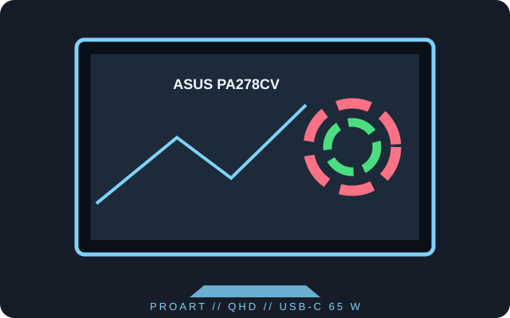

[ INDIVIDUAL COMPONENT // DISPLAYS ]
ASUS ProArt Display PA278CV
A 27-inch QHD IPS monitor with a 75 Hz panel, USB-C docking and DisplayPort daisy-chain output.

IDENTIFICATION: Use the exact PA278CV model designation; do not substitute specifications from a similarly named ProArt display.
Specifications
| Catalog subcategory | LCD displays |
|---|---|
| Exact product | ASUS ProArt Display PA278CV |
| Panel and native resolution | 27-inch IPS LCD, 2560 × 1440 (16:9) |
| Native refresh | Up to 75 Hz at native resolution |
| Luminance / contrast | 350 cd/m² typical; 1000:1 typical |
| Inputs / companion ports | HDMI 1.4 × 2, DisplayPort 1.2, USB-C with DisplayPort Alt Mode and up to 65 W power delivery, DisplayPort-out MST, USB hub |
| Stand / VESA | Height, tilt, swivel and pivot adjustment; 100 × 100 mm VESA mounting |
| Power / compatibility | External 19 V DC adapter (up to 4.74 A); use the supplied adapter. USB-C video and charging require a compatible host; DP-out multi-stream transport also requires host and downstream display support. |
Preservation notes
Keep the adapter with the monitor and record its output rating. The USB-C port combines video, data and charging; use the specified power source and a cable rated for the desired host features.
Manufacturer documentation and sources
- ASUS — ProArt Display PA278CV specificationsManufacturer product page with technical specifications.
- ASUS Support — PA278CV manuals and documentsModel-specific user guide and support documentation.